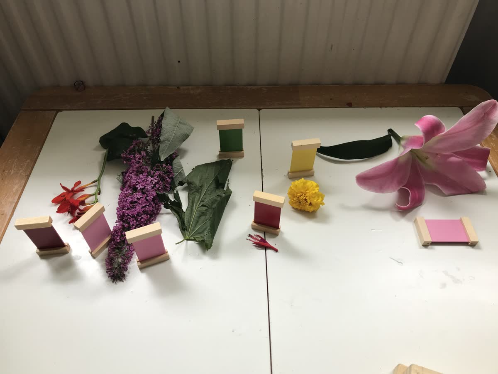

i
Schools & teaching teams
Developing a curriculum that flows across age groups, welcoming children with special educational needs, and bringing more of the learning outdoors.
How can I support your learning journey?
For twenty years I have worked in Montessori and Reggio Emilia schools and in nature education. I'd love to walk alongside schools, educators and home-educating families as they create places where children can unfold from within.
Begin a conversation
Developing a curriculum that flows across age groups, welcoming children with special educational needs, and bringing more of the learning outdoors.
Gentle, practical support for parents who educate at home: preparing the environment, choosing materials and trusting the child's own rhythm.
Small online classes for home-educated children aged six and over, in the spirit of Montessori Cosmic Education.
A course I created for people working with children in a home-based setting. See the course →

A few words here about what drew you to Montessori, and a favourite moment with a child.
Education is only one expression of the journey.
I'd love to hear where you are on your learning journey.